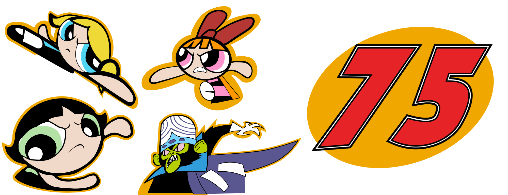

Welcome to my Illustrator Page. Here you'll find severel of my completed Vector Projects that I worked on in my free time. They range from recreated Character Art to made from scratch Driver Numbers.
The Powerpuff Girls (Completed in 2024)

My 1st proper tackle into a Vector Set and it's the classic Powerpuff Girls Trio, their archnemeis, Mojo Jojo, and the special variation of the #75 that was used in the real life scheme. These 4 Vectors were created as part of a project recreating Wally Dallenbach's real life Powerpuff Girls paint scheme, which run in the 2000 Daytona 500.
If you've noticed, all of these include portions that are "incomplete." This is because most of the time, character art from this time period are cropped by parts of the real life car and not cropped in official Diecast Boxes, but not in this instance, so they feature parts that are covered up later by parts of the car itself.
Moltar (Completed in 2024)
Another vector for another paint scheme, this time it features the class Adult Swim character, Moltar from the Coast to Coast version of the Space Ghost Franchise. Just like the PPG vectors, this one was created for a Paint Scheme project and the bottom of the vector got covered up in the completed version.